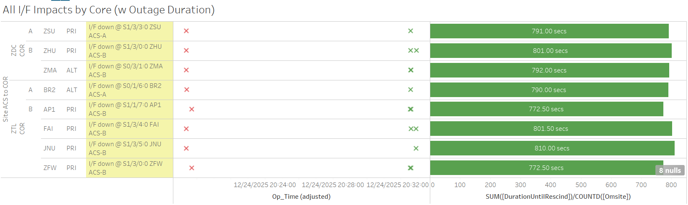

Weekly Highlights 20251217-20251224🎄
12/17 - MSD WRE-B Freq Std Failed
- 12/17 10:14 - MSD WRE-B Faulted with SEs 52, 53,
59; Freq Std has alarm code 0x12 "5V
Supply" out of tolerance; Reset and
restored to Normal at 12/17
14:19
- 12/17 16:53 - Coordinated power cycle with MSD WRE-B; Freq Std never recovered...
- 12/18 04:07 - MSD returned to Maintenance after
tech completed WRS0005. freq std replaced.; restored to Normal at 12/18 04:28
12/19 - ZOA PCU-A Replaced
- 12/19 19:10 - ZOA PCU-A replaced but techs could not locate correct cable for configuration; ZOA WRE-A in Maintenance Mode until PCU can be configured -- LIR 1094186324
12/20 - ZDC WRE-A Fault
- 12/20 20:51 - ZDC WRE-A Faulted with SEs 29,52,53,59; Control Powered and restored to Normal at 12/20 21:34
12/23/25-1/4/26 - Christmas Moratorium
- Christmas/New Year Moratorium. NMA-25-097/NMA-25-098 12/23-01/04
Various Comm Impacts
* Only captures major / long-term comm outages
CDB Comms
- 12/18 11:55 - CDB Ring 1 comms down hard; line cleared at 12/18 12:04 (~493 seconds)
- 12/18 12:16 - CDB Ring 2 comms down hard; line cleared at 12/18 12:26 (~591 seconds)
- 12/18 12:38 - CDB Ring 2 comms down hard; line cleared at 12/18 12:41 (~168 seconds)
- 12/21 06:04 - CDB Ring 1 comms down hard; line cleared at 12/21 06:35 (~1859 seconds)
- 12/21 07:06 - CDB Ring 1 comms down hard; line cleared at 12/21 07:11 (~289 seconds)
- 12/24 05:25 - CDB Ring 2 comms down hard; line cleared at 12/24 06:16 (~3058 seconds)
Other Sites
- 12/17 02:46 - OTZ Ring 1 PRI / Ring 2 ALT comms down hard; both lines cleared at 12/17 02:47 (~87 seconds)
- 12/17 07:17 - ZLC Ring 1 ALT / Ring 2 PRI comms down hard; both lines cleared at 12/17 09:25 (~7660 seconds)
- 12/17 07:23 - BIL Ring 1 ALT / Ring 2 PRI comms down hard; both lines cleared at 12/17 08:40 (~4610 seconds)
- 12/17 14:32 - BR1 Ring 1 ALT / Ring 2 PRI + BR2 Ring 1 ALT / Ring 2 PRI comms down hard...
- 12/18 20:08 - BR2 Ring 2 PRI momentarily restored then back down hard...
- 12/19 00:26 - BR1 Ring 1 ALT / Ring 2 PRI + BR2 Ring 1 ALT / Ring 2 PRI comms cleared (~122009 seconds; down since 12/17)
- 12/19 05:22 - ZLC Ring 1 ALT / Ring 2 PRI comms down hard; both lines cleared at 12/19 05:23 (~75 seconds)
- 12/19 08:53 - BR1 Ring 1 ALT / Ring 2 PRI + BR2 Ring 1 ALT / Ring 2 PRI comms down hard; all lines cleared at 12/19 09:01 (~490 seconds)
- 12/19 17:30 - BET Ring 1 ALT / Ring 2 PRI comms flapping; last events cleared at 12/19 17:58 (~214 seconds total)
- 12/20 21:03 - YYR Ring 2 comms down hard -- ref LIR 1096096824...
- 12/23 16:22 - YYR Ring 2 comms cleared (~242366 seconds; down since 12/20)
- 12/24 16:16 - YFB Ring 2 comms cleared (down since 11/6/24)
12/17/25 BR1 + BR2 Comms
ISR-0625-1746 including BR1 Ring 1 ALT / Ring 2 PRI + BR2 Ring 1 ALT / Ring 2 PRI and non-op to 61CA -- latest status: FTI advsd circuits have temporary solution in place. FTI advised of latest comm down; (plan to convert to e-net Dec2025, but no date)
- 12/17 14:32 - BR1 Ring 1 ALT / Ring 2 PRI + BR2 Ring 1 ALT / Ring 2 PRI comms down hard...
- 12/18 20:08 - BR2 Ring 2 PRI momentarily restored then back down hard...
- 12/19 00:26 - BR1 Ring 1 ALT / Ring 2 PRI + BR2 Ring 1 ALT / Ring 2 PRI comms cleared (~122009 seconds; down since 12/17)
12/20/25 YYR Ring 2 Comms
- 12/20 21:03 - YYR Ring 2 comms down
hard --
ref LIR
1096096824;
FTI/NECC-AR advised both paths for the circuit checked good. Suspect issue at site or with NAVCAN's portion of the circuit.... - 12/23 16:22 - YYR Ring 2 comms cleared (~242366 seconds; down since 12/20)
11/6/24-12/24/25 YFB Ring 2 Down Hard...
YFB requires satcom upgrades by NavCanada to restore... ref LIR 892056924
- 11/6/24 19:48 - YFB Ring 2 down hard... both rings to YFB down hard...
- 12/24 16:16 - YFB Ring 2 comms cleared (down since 11/6/24)
5/11/23 Mexico Ring 2 Down Hard...
- 5/11/23 17:01 - MX Ring 2 SatCom upgrade begins; MX Ring 2 OFFLINE until upgrade troubleshooting is complete...
- Targeting network upgrade in CY26
List of current offline WREs
List of current offline WREs -- ref WAAS Status Monitor
All Depot shipments to Mexico are halted until the customs process can be finalized
Currently working to assess MX Inventory to determine equipment refresh and restoration needs...
- ZOA WRE-A - 12/16/25-... - ZOA WRE-A PCU failed; part on order -- ref LIR 1094186324...
- MMD WRE-C - 10/20/25-... - Good Freq Std swapped into WRE-A to restore -- ref LIR 211505621
- MTP WRE-A - 9/23/25-...
- PCU Failed after power outage; PCU-B swapped
into WRE-A but DC output is non-functional...
ref LAD
1060696524
- Planning to swap PCU-C into WRE-A -- this will remove WRE-C from service, but allow us to restore WRE-A for analysis
- MTP WRE-B - 11/18/24-... - Receiver inits failing due to no DC Power from PCU; PCU swapped with PCU-A after PCU-A failed -- ref LIR 898330924
- MPR WRE-B - 5/3/24-... - Inits failing -- looks like a bad freq std; due to shipping issues, there is no spare Freq Std and no ETA to recover WRE-B... -- ref LIR 44170821

Major Events


Core I/F Status

Comm Events

Mexico Comm Status


Weekly Highlights 20251224-20251231🎉
12/23/25-1/4/26 - Christmas Moratorium
- Christmas/New Year Moratorium. NMA-25-097/NMA-25-098 12/23-01/04
12/24 - CM1 GUS C-Band Tracking Alarms
- 12/24 15:00 - CM1 GUS alarmed with SE 190 C-Band Tracking Rcvr Failure; cleared after ~5 seconds
- 12/25 08:14 - CM1 GUS alarmed with SE 190 C-Band Tracking Rcvr Failure; cleared after ~155 seconds
12/27 - BR2 GUS LNA Alarms
- 12/27 01:43 - BR2 GUS alarmed with SEs 195-198 L1 LNA 1 / 2 Failures and L1 LNA Controller / Switch Failures; all SEs cleared after ~1 second
- 12/27 02:08 - BR2 GUS alarmed with SEs 195-198 L1 LNA 1 / 2 Failures and L1 LNA Controller / Switch Failures; all SEs cleared after ~1 second
12/28 - ZMA WRE-A Fault
- 12/28 20:32 - ZMA WRE-A Faulted with SEs 29,52,53,59; Control Powered and restored to Normal at 12/28 21:16; pre-existing SE 30 Minor Alarm continued flapping after restoration
12/30 - BR2 GUS Fault from Primary
- 12/30 13:25 - GUS Switchover-G30
- AP1 to Primary / BR2 GUS Faulted from Primary
Mode with SE 191 C1 KPA Failure;
WAVEGUIDE ARC, DECT RECEIVER FAULT SYSTEM RESET ITSELF, RFU RESET-- ref LIR 234182121- 12/30 13:42 - Control Powered and Faulted again from Verification Mode with SE 45 L5 GEO Downlink Msg Check Fault at 12/30 14:15
- 12/30 14:17 - Control Powered and Faulted again from Verification Mode with SE 45 at 12/30 14:57
- 12/30 15:00 - Reset BR2 GUS Subsystem and restored to Backup Mode at 12/30 15:16
12/30 - MMD WRS L1/L2 Bias Error
- 12/30 15:55 - MMD WRS alarmed with L1/L2 Bias Error for all C&Vs
Various Comm Impacts
* Only captures major / long-term comm outages
CDB Comms
- 12/24 05:25 - CDB Ring 2 comms down hard; line cleared at 12/24 06:16 (~3058 seconds)
- 12/30 04:01 - CDB Ring 1 comms down hard; line cleared at 12/30 04:08 (~397 seconds)
- 12/30 05:11 - CDB Ring 2 comms flapping until down hard at 12/30 05:46; line cleared at 12/30 06:13 (~3500 seconds total)
- 12/30 06:18 - CDB Ring 1 comms down hard; line cleared at 12/30 06:28 (~590 seconds)
- 12/30 06:21 - CDB WRE-A alarmed with SE 721 PID WRS Down for ZTL CV only
- 12/30 07:21 - CDB Ring 2 comms down hard; line cleared at 12/30 07:31 (~570 seconds)
- 12/30 07:22 - CDB Ring 1 comms flapping; last event cleared at 12/30 07:36 (~778 seconds total)
- 12/30 08:25 - CDB Ring 2 comms down hard; line cleared at 12/30 08:43 (~1110 seconds)
- 12/30 08:46 - CDB Ring 1 comms flapping; last event cleared at 12/30 08:51 (~464 seconds total)
BRW Comms
- 12/27 08:30 - BRW Ring 1 PRI / Ring 2 ALT comms flapping; last events cleared by 12/27 14:45 (~130 seconds total)
- 12/27 22:37 - BRW Ring 1 PRI / Ring 2 ALT comms flapping; last events cleared by 12/27 22:41 (~40 seconds total)
- 12/28 17:46 - BRW Ring 1 PRI / Ring 2 ALT comms flapping; last events cleared by 12/28 19:03 (~246 seconds total)
- 12/28 20:39 - BRW Ring 1 PRI / Ring 2 ALT comms flapping; last events cleared by 12/28 22:44 (~253 seconds total)
- 12/28 22:25 - BRW Ring 1 ALT / Ring 2 PRI comms down hard; both lines cleared at 12/29 05:17 (~24735 seconds)
- 12/29 10:28 - BRW Ring 1 ALT / Ring 2 PRI comms flapping; last events cleared by 12/29 11:25 (~307 seconds total)
- 12/29 12:15 - BRW Ring 1 ALT / Ring 2 PRI comms flapping; last events cleared by 12/29 12:39 (~247 seconds total)
Other Sites
- 12/24 16:16 - YFB Ring 2 comms cleared (down since 11/6/24)
- 12/24 20:19 - Multiple comms impacted from ZDC and
ZTL for
ISR 1224-0710 rev1-- ref LAD 1096831124; all comms cleared by 12/24 20:32 (~800 seconds)

- 12/25 21:05 - DX1 Ring 1 PRI / Ring 2 ALT comms down hard; both lines cleared at 12/25 21:09 (~208 seconds)
- 12/25 21:15 - DX1 Ring 1 PRI / Ring 2 ALT comms down hard; both lines cleared at 12/25 21:20 (~293 seconds)
- 12/25 21:54 - DX1 Ring 1 PRI / Ring 2 ALT comms flapping until down hard at 12/25 21:56; both lines cleared at 12/25 22:01 (~342 seconds)
- 12/27 00:12 - BET Ring 1 ALT / Ring 2 PRI comms flapping; last events cleared at 12/27 02:13 (~170 seconds total)
11/6/24-12/24/25 YFB Ring 2 Down Hard...
YFB requires satcom upgrades by NavCanada to restore... ref LIR 892056924
- 11/6/24 19:48 - YFB Ring 2 down hard... both rings to YFB down hard...
- 12/24 16:16 - YFB Ring 2 comms cleared (down since 11/6/24)
5/11/23 Mexico Ring 2 Down Hard...
- 5/11/23 17:01 - MX Ring 2 SatCom upgrade begins; MX Ring 2 OFFLINE until upgrade troubleshooting is complete...
- Targeting network upgrade in CY26
List of current offline WREs
List of current offline WREs -- ref WAAS Status Monitor
All Depot shipments to Mexico are halted until the customs process can be finalized
Currently working to assess MX Inventory to determine equipment refresh and restoration needs...
- ZOA WRE-A - 12/16/25-... - ZOA WRE-A PCU failed; part on order -- ref LIR 1094186324...
- MMD WRE-C - 10/20/25-... - Good Freq Std swapped into WRE-A to restore -- ref LIR 211505621
- MTP WRE-A - 9/23/25-...
- PCU Failed after power outage; PCU-B swapped
into WRE-A but DC output is non-functional...
ref LAD
1060696524
- Planning to swap PCU-C into WRE-A -- this will remove WRE-C from service, but allow us to restore WRE-A for analysis
- MTP WRE-B - 11/18/24-... - Receiver inits failing due to no DC Power from PCU; PCU swapped with PCU-A after PCU-A failed -- ref LIR 898330924
- MPR WRE-B - 5/3/24-... - Inits failing -- looks like a bad freq std; due to shipping issues, there is no spare Freq Std and no ETA to recover WRE-B... -- ref LIR 44170821

Major Events


Core I/F Status

Comm Events

Mexico Comm Status


Weekly Highlights 20251231-20260107
12/23/25-1/4/26 - Christmas Moratorium
- Christmas/New Year Moratorium. NMA-25-097/NMA-25-098 12/23-01/04
1/2 - ZNY WRE-B Faulted
- 1/2 05:21 - ZNY WRE-B Faulted with SEs 29,30,52,53,59; Control Powered and restored to Normal at 1/2 06:55
1/5 - HNL WRE-C Faulted
- 1/5 05:50 - HNL WRE-C Faulted with SEs 53,59 and Freq Std Alarm Code F3 - Ionizer Filament; Control Powered and restored to Normal at 1/5 06:53
1/7 - ZFW WRE-B Faulted
- 1/7 00:41 - ZFW WRE-B Faulted with SEs 30,52,53,59; Control Powered but Faulted again from Verification Mode with SEs 30,52,53,59 -- both associated with Freq Std Alarm Code 7; Control Powered and restored to Normal at 1/7 02:39
1/7 - ZOA WRE-A PCU Replaced
- 1/7 02:39 - ZOA WRE-A to No Data Reported to
install new pre-configured PCU; restored
to
Normal at 1/7 13:27
- ZOA WRE-A - 12/16/25-1/7/26 - ZOA WRE-A PCU failed; part on order -- ref LIR 1094186324; initial replacement PCU could not be configured; shipped new pre-configured PCU...
1/7 - ZME WRE-A Freq Std Failed
- 1/7 02:36 - ZME PCU-A alarmed with SE 207 DC1/2
unexpected state
- 1/7 02:55 - ZME WRE-A to Maintenance and shutdown to address PCU unexpected DC1/2 state -- ref LIR 1102034824; unexpected state cleared, but...
- 1/7 03:29 - ZME WRE-A Freq Std init failed -- ref LIR 1102045424; Control Powered twice, but Freq Std failed both times; Control Powered OFF at 1/7 06:34 to stop cycling in Maintenance...
- 1/7 07:56 - ZME PCU-A DC1/2 state spontaneously greened up without action from Operator... possible failing PCU...
- 1/7 17:01 - ZME WRE-A to Maintenance for further investigation; technician performed WRS0014 and determined failed Freq Std; part on order... ref LAD 1102045424
1/7 - ZAB WRS Power Work / WRE-A Freq Std Failed
- 1/7 04:54 - ZAB WRE-A to Maintenance and Shutdown
for
ASCO pwr xfr switch repls. See ORMP-25-09518-- ref LIR 1102049424; after power work, ZAB WRE-A Freq Std inits failed and could not restore WRE...- 1/7 08:45 - ZAB WRE-B to Maintenance and Shutdown for power work; Control Powered and restored to Normal at 1/7 11:00
- 1/7 11:46 - ZAB WRE-A Control Powered OFF to stop cycling in Maintenance Mode; technician determined Freq Std failed; part on order... ref LAD 1102085624
1/7 - ZLC WRE-B Faulted
- 1/7 12:18 - ZLC WRE-B Faulted with SEs 52,53,59 and Freq Std Alarm Code F3 - Ionizer Filament; Control Powered and restored to Normal at 1/7 13:03
1/7 - ZBW WRE-B RF Power Divider Installed
- 1/7 12:47 - ZBW WRE-B to Maintenance and Control
Powered to install replacement RF Power Divider
-- ref LIR
1222374632; Freq Std Inits failed...
- 1/7 15:54 - ZBW WRE-B returned to Maintenance and site technician tested Freq Std 10 MHz output with/without RF Power Divider to confirm signal; restored to Normal at 1/7 17:37
Various Comm Impacts
* Only captures major / long-term comm outages
Other Sites
- 12/31 20:42 - YFB Ring 1 comm fault flapping; last comm fault cleared at 1/1/26 00:42 (~2988 seconds total)
- 1/1 07:01 - OTZ Ring 1 PRI / Ring 2 ALT comms down
hard; both lines cleared at 1/1 07:03
(~128 seconds)
- 1/1 07:01 - OTZ Ring 1 ALT / Ring 2 PRI comms down hard; both lines cleared at 1/1 07:04 (~129 seconds)
- 1/2 04:26 - CDB Ring 2 comms flapping; last event cleared at 1/2 04:44 (~600 seconds total)
- 1/5 01:10 - CDB Ring 2 comms down hard; line cleared at 1/5 01:30 (~1190 seconds)
- 1/5 20:14 - MTP Ring 1 comms down hard -- OFFLINE; line cleared at 1/5 20:24 (~595 seconds)
- 1/6 00:04 - MSD Ring 1 comms down hard -- OFFLINE;
line cleared at 1/6 00:12 (~477
seconds)
- 1/6 00:05 - MSD WRS L1/L2 Bias Error
- 1/7 16:22 - MTP Ring 1 comms down hard; line cleared at 1/7 16:32 (~596 seconds)
- 1/7 21:03 - MTP Ring 1 comms down hard...
5/11/23 Mexico Ring 2 Down Hard...
- 5/11/23 17:01 - MX Ring 2 SatCom upgrade begins; MX Ring 2 OFFLINE until upgrade troubleshooting is complete...
- Targeting network upgrade in CY26
List of current offline WREs
List of current offline WREs -- ref WAAS Status Monitor
All Depot shipments to Mexico are halted until the customs process can be finalized
Currently working to assess MX Inventory to determine equipment refresh and restoration needs...
- ZAB WRE-A - 1/7/26-... - Technician determined Freq Std failed; part on order... ref LAD 1102085624
- ZME WRE-A - 1/7/26-... - Technician performed WRS0014 and determined failed Freq Std; part on order... ref LAD 1102045424
- MMD WRE-C - 10/20/25-... - Good Freq Std swapped into WRE-A to restore -- ref LIR 211505621
- MTP WRE-A - 9/23/25-...
- PCU Failed after power outage; PCU-B swapped
into WRE-A but DC output is non-functional...
ref LAD
1060696524
- Planning to swap PCU-C into WRE-A -- this will remove WRE-C from service, but allow us to restore WRE-A for analysis
- MTP WRE-B - 11/18/24-... - Receiver inits failing due to no DC Power from PCU; PCU swapped with PCU-A after PCU-A failed -- ref LIR 898330924
- MPR WRE-B - 5/3/24-... - Inits failing -- looks like a bad freq std; due to shipping issues, there is no spare Freq Std and no ETA to recover WRE-B... -- ref LIR 44170821

Major Events


Core I/F Status

Comm Events

Mexico Comm Status